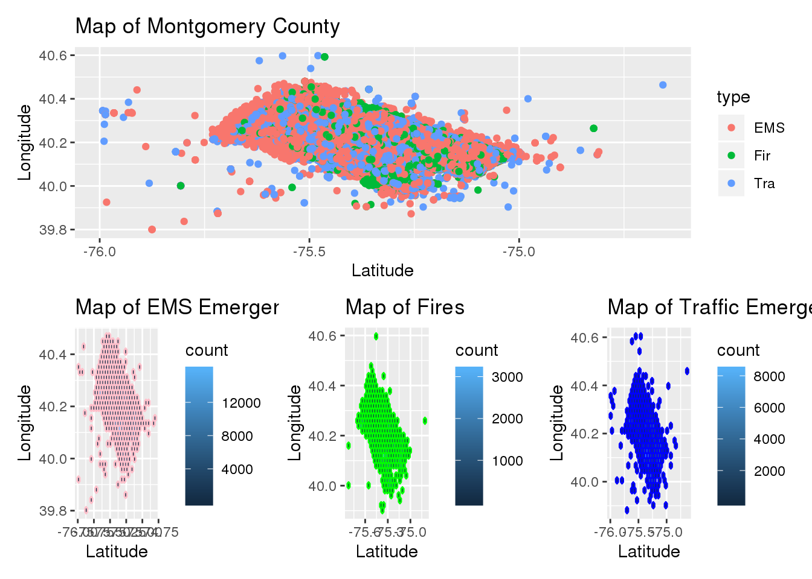
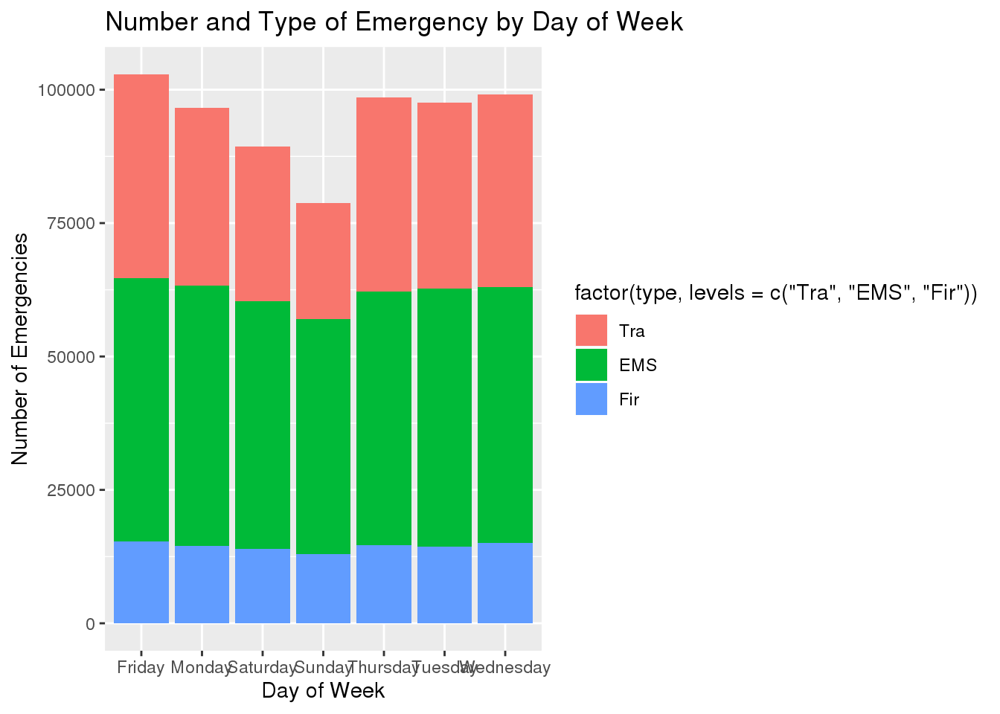

knitr::opts_chunk$set(echo = TRUE, tidy = TRUE)
library(here)
library(ggplot2)
library(tidyverse)
library(readxl)
library(patchwork)
library(rgdal)
library(lubridate)
library(maps)
library(ggmap)
library(mapdata)
data_911 <- read.csv(here("content", "post", "2020-12-07-montgomery-county-911-analysis", "911.csv"))
data_911 <- mutate(data_911, type = substr(title, 1,3))
data_911 <- mutate(data_911, date = as_date(ymd_hms(timeStamp)), time = hms::as_hms(ymd_hms(timeStamp)))
data_911$dow <- weekdays(data_911$date)
# str(data_911)
data_911 <- data_911 %>%
filter(lat > 39.8 & lat < 40.6) %>%
filter(lng > -76 & lng < -74.5)
Montgomery County 911 Calls
Introduction
For this project I am examining the 911 calls data contained in the Emergency – 911 Calls dataset from Kraggle.com, the data was originally provided by montcoalert.org. This dataset contains information about emergency calls made to 911 in Montgomery County Pennsylvania. I believe this dataset to be a subset of a larger dataset that contains all calls made to 911, I think this because there is a column that seems to serve as a flag within the dataset. Upon analyzing the data I hope to be able to determine which area of Montgormery county has the most emergencies, what type of emergency is the most common and determine which day of the week has the most traffic accidents.
Exploratory Data Analysis
Performing exploratory analysis was harder on this data set as most of the variables had hundreds of levels making it such that creating a table would not provide many valuable insights. To make the dataset more usable I edited it slightly in excel, creating a column that only had the main type of emergency (EMS, Fire or Traffic) and did not also contain the further classification. I also divided the time stamp into two separate columns so that it would be easier to analyze and then I used the new date column to produce a new column which was the day of week. The insights that I did gather are as follows: there are three different types of emergencies - EMS (emergency medical services), Fir (fire) and Tra (traffic). Of the three types of emergencies EMS emergencies are the most common followed by traffic and fire. The 911 operator receives the most emergency calls on Fridays and the least on Sundays.
table(data_911$type)
##
## EMS Fir Tra
## 332583 100554 229816
table(data_911$dow)
##
## Friday Monday Saturday Sunday Thursday Tuesday Wednesday
## 102853 96662 89363 78773 98598 97613 99091
counties <- map_data("county")
pa_county <- subset(counties, region == "pennsylvania")
mont_county <- subset(pa_county, subregion == "montgomery")
ggplot(data_911) + geom_hex(aes(lng, lat), bins = 60) + geom_polygon(data = mont_county,
aes(x = long, y = lat, group = group), color = "red", fill = NA) + facet_wrap(~type) +
xlab("Latitude") + ylab("Longitude") + ggtitle("Map of Montgomery County")
 # Data Analysis & Results
# Data Analysis & Results
Question 1
The first thing I wanted to determine was which area of Montgomery County had the most emergencies. I determined this by making a spatial map using the longitude and latitude and then mapped the emergencies by creating a colored dot that corresponded to the type of emergency each time it occurred. Because of how clumped together all the data points ended up being I decided to look at each type of emergency individually so that I could more distinctly see what was happening. I was able to do this by using the same format I did for the first map but filtering down to only using the data that was coded as a specific type of emergency. I then patched all these graphs together so that they could be viewed simultaneously. When looking at the graphs it is easy to see that is one ‘hot spot’ where the majority of the emergencies occur. When I looked up a map of Montgomery county I was able to determine that most of the emergencies occur in the Lower Merrion township.
p1 <- filter(data_911) %>% ggplot(aes(lng, lat, color = type)) + geom_point() + xlab("Latitude") +
ylab("Longitude") + ggtitle("Map of Montgomery County")
p2 <- filter(data_911) %>% filter(type == "EMS") %>% ggplot(aes(lng, lat)) + geom_hex(color = "pink") +
xlab("Latitude") + ylab("Longitude") + ggtitle("Map of EMS Emergencies")
p3 <- filter(data_911) %>% filter(type == "Fir") %>% ggplot(aes(lng, lat)) + geom_hex(color = "green") +
xlab("Latitude") + ylab("Longitude") + ggtitle("Map of Fires")
p4 <- filter(data_911) %>% filter(type == "Tra") %>% ggplot(aes(lng, lat)) + geom_hex(color = "blue") +
xlab("Latitude") + ylab("Longitude") + ggtitle("Map of Traffic Emergencies")
(p1)/(p2 | p3 | p4)

Question 2
The second question I wanted to answer was what type of emergency is the most common. I determined this by sorting the data by the title column and then counting the number of occurrences with the same name and then arranging them in descending order. By doing this I was able to ascertain (unsurprisingly) that vehicle accidents are the most common emergency followed by disabled vehicles and fire alarms.
data_911 %>% group_by(title) %>% count() %>% arrange(desc(n))
## # A tibble: 148 x 2
## # Groups: title [148]
## title n
## <fct> <int>
## 1 Traffic: VEHICLE ACCIDENT - 148177
## 2 Traffic: DISABLED VEHICLE - 47814
## 3 Fire: FIRE ALARM 38334
## 4 EMS: FALL VICTIM 34675
## 5 EMS: RESPIRATORY EMERGENCY 34244
## 6 EMS: CARDIAC EMERGENCY 32326
## 7 EMS: VEHICLE ACCIDENT 25446
## 8 Traffic: ROAD OBSTRUCTION - 23153
## 9 EMS: SUBJECT IN PAIN 19643
## 10 EMS: HEAD INJURY 18299
## # … with 138 more rows
Question 3
The final question I wanted to answer was to visually determine which day of the week had the most emergencies. I did this by sorting the data by day or week and then plotting that on a bar chart and filling the bars with the correct percentage of each type of emergency in comparison to the total number of emergencies that occurred that day. By looking at the bar chart I was able to deduce that the most emergencies occur on Fridays and the least on Sundays. Across all seven days it seems that the number of EMS emergencies and fires stay relatively constant and that traffic emergencies are the main cause of the variation in total emergencies per day.
data_911 %>% group_by(dow) %>% ggplot(aes(dow, e, fill = factor(type, levels = c("Tra",
"EMS", "Fir")))) + geom_bar(stat = "identity") + xlab("Day of Week") + ylab("Number of Emergencies") +
ggtitle("Number and Type of Emergency by Day of Week")

Weaknesses/Challenges in Data
There were a few structural challenges with this dataset some of the columns originally contained too much information - combining date and time or multiple levels of emergency classification. To combat these challenges I had to manipulate and resort the data in excel before I uploaded it to analyze. I think it would have been interesting if they had included a column that was response time, so the time between when the call was received and when the response team arrived at the emergency. I think it could prove insightful to see if various kinds of emergencies produced different response times.
Conclusion
This dataset did not produce many surprising insights, most of the results produced by the analysis were the answers you would have expected after thinking about the question. The most common type of emergency was vehicle accidents and Fridays were the day when the most emergencies occured. I did find it interesting that the number of EMS emergencies and fires remained relatively constant across the entire week and it was traffic emergencies that was mostly responsible for the variation in total emergencies we see for each day. I found the spatial map extremely odd, not growing up in (or near) Montgomery County I am unaware of how the population density so upon seeing the spatial map with the majority of emergencies occuring in one area it led me to believe that this area is more heavily populated that the rest of the county (or the people are more accident prone but I do not really think this could be the reason).